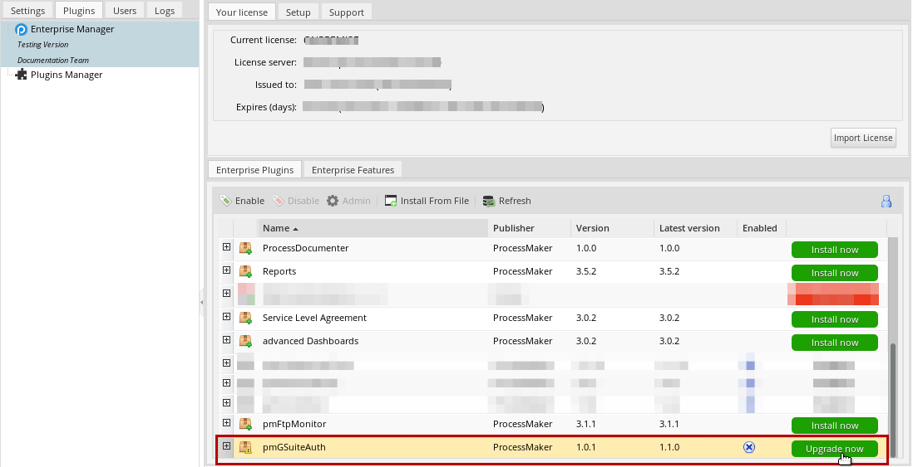
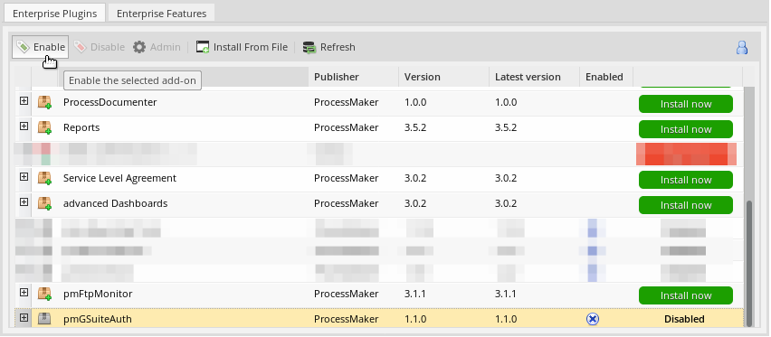
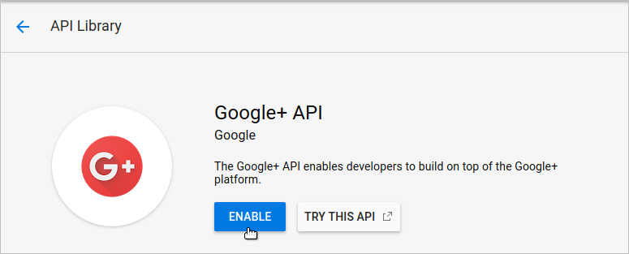
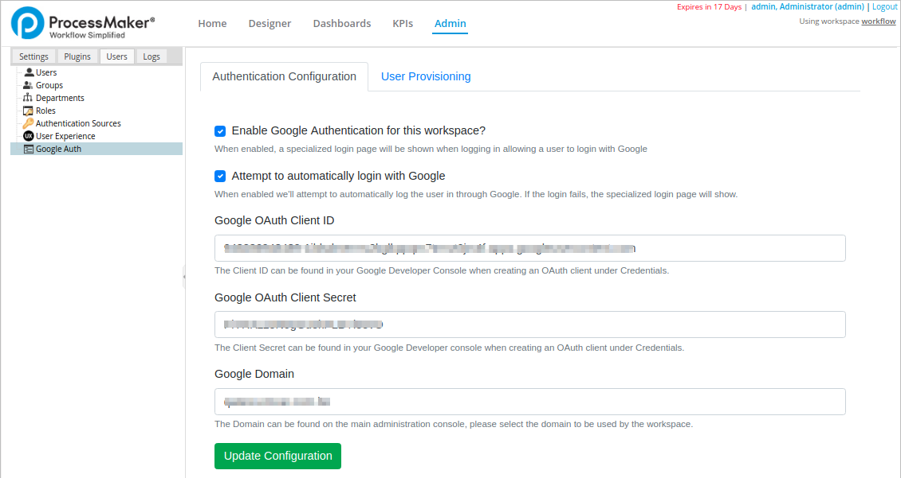
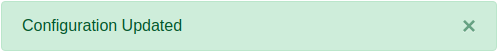
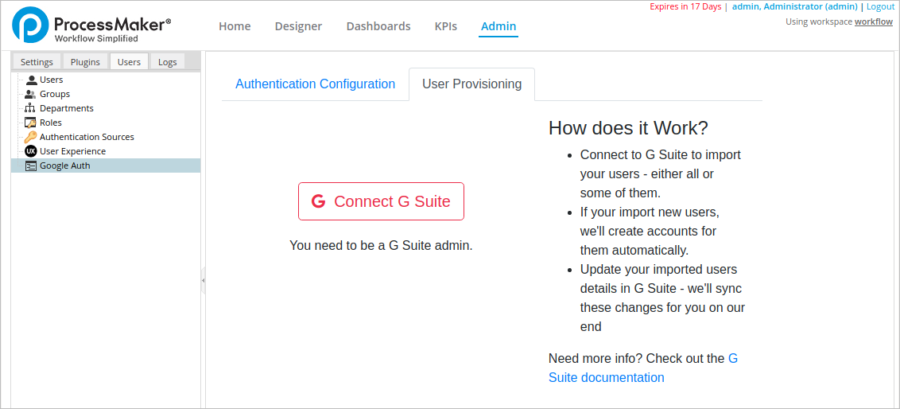
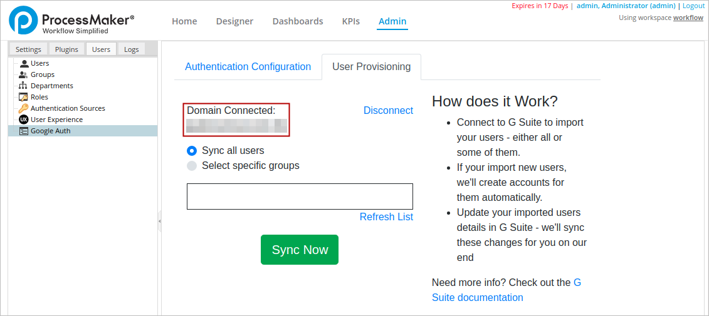
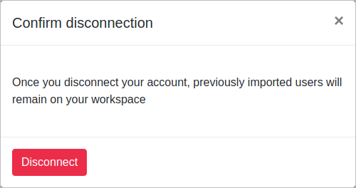
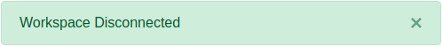

Plugin Version:
1.1.2
Plugin Version:
1.1.2
Overview
The Google Authentication plugin allows customers who use G Suite to log in to ProcessMaker Enterprise using their Google credentials.
Requirements
The following are requirements for the Google Authentication plugin:
- This plugin version works with:
- ProcessMaker Enterprise edition, version 3.4.0 and later
- PHP 7.1.x and later
- Your organization must be a G Suite subscriber.
- You must have Google OAuth 2.0 credentials. This includes the Google OAuth Client ID and Google OAuth Client Secret. To create Google OAuth 2.0 credentials, see Google's OAuth2 Authentication guide. This guide requires to enter:
- Authorized JavaScript origins: It is the ProcessMaker origin URI (https://www.processmakerserverexample.com).
- Authorized redirect URIs: It is the ProcessMaker server URIs in the application that you are redirected to after you have authenticated with Google. The ProcessMaker URIs format are:
https://www.processmakerserverexample.com/sysworkflow/en/neoclassic/pmGSuiteAuth/index.php/auth/callback
https://www.processmakerserverexample.com/sysworkflow/en/neoclassic/pmGSuiteAuth/index.php/api/config/oauthCallback
Installation
Refer to the following sections to install the Google Authentication plugin:
Install the Plugin
Log in with a user, such as "admin," who has the PM_SETUP_ADVANCE permission in their role, and then go to ADMIN > Plugins > Enterprise Manager. In the next graphic, do one of the following:
- Install the Google Authentication plugin by clicking on
 Install from File and uploading the plugin file.
Install from File and uploading the plugin file. - Click on the Google Authentication plugin's Install Now or Upgrade now button in the list of available plugins.

For more information about plugin options, see Enterprise Manager Tool.
Enable the Plugin
After installing the plugin, make sure that the Google Authentication plugin is enabled  . If the plugin is not enabled, click the Enable button, as shown in the graphic below.
. If the plugin is not enabled, click the Enable button, as shown in the graphic below.

Configuration
After the Google Authentication plugin is installed, refer to the following sections regarding configuration:
Google Authentication Configuration
After the Google Authentication plugin is installed and enabled, an IT administrator must configure the plugin to integrate with Google authentication. After the plugin is integrated, Google authentication is enabled across the ProcessMaker application.
Ensure to have the Google OAuth Client ID and OAuth Client Secret prior to integrating the plugin with Google authentication.
Note: Before you make these configurations, in the library of the Google Developers Console be sure to enable the G Suite Administration. Furthermore, enable the Google+ API, and Admin SDK services.
 
Follow these steps to integrate the plugin with Google authentication:
Log in to ProcessMaker using administrator credentials.
Go to Admin > Users > Google Auth. The Authentication Configuration tab displays.

Select the Enable Google Authentication for this workspace? check box. When selected, the ProcessMaker log in page displays a Sign in with Google and will use the configuration provided on the other fields for authentication.
Select Attempt to automatically login with Google to skip the log in page and redirect the user to the ProcessMaker landing page.
Enter your Google OAuth Client ID in the Google OAuth Client ID field.
Enter your Google OAuth Client Secret in the Google OAuth Client Secret field.
Enter your Google domain in the Google Domain field. As administrator of G Suit you need to define the domain where you synchronize groups and users in your Google configuration.
Click Update Configuration. The message Configuration Updated displays at the top of the screen to confirm the settings are saved.

User Provisioning
After configuring the plugin to integrate with Google authentication, specify which users within the organization can be authenticated through Google (also known as user provisioning).
As an administrator, you can import some or all of your organizational users into the plugin so that users you specify can log in to ProcessMaker via their Google credentials.
Furthermore, if you update your users' credentials in G Suite, the Google Authentication plugin will automatically synchronize those changes for ProcessMaker.
Follow these steps to integrate the plugin with Google authentication:
Log in to ProcessMaker using administrator credentials.
Go to Admin > Users > Google Auth. The Authentication Configuration tab displays.
Click the User Provisioning tab. The Connect G Suite displays.

Click the Connect G Suite button to automatically connect with Google using your Google OAuth credentials configured in the Authentication Configuration tab. The screen displays to which domain the plugin is connected.

If you are connected to the incorrect domain or want to connect another domain, click the Disconnect link. Then configure the Authentication Configuration tab. In the following window, click Disconnect to confirm disconnection.

The Workspace Disconnected message displays at the top of the screen.

To specify which users can use their Google credentials to log on to ProcessMaker, follow one of these guidelines:
Select the Sync all Users option to synchronize all users to log on to ProcessMaker or create new users using auto-provisioning with their Google credentials.

-
Select the Select specific groups option to specify which group(s) of users can be synchronized to log on to ProcessMaker with their Google credentials or being created as new.

After you select the Select specific groups option, two columns display:
-
The left column displays pages in alphabetical order of the groups that G-Suite identifies, they display this information using the lazy loading.
This list is displayed depending on the amount that was configured to display, as a default it displays 25 groups for each page, this can be configured to a max of 200 for each page.
The groups will not be displayed until they are required by clicking the Next button.

If you want to display all the groups at once, you can do that by clicking the Next button until there is no more groups to display, this will allow to save all of them in memory for later use or until the page is refreshed.
The right column displays the groups that synchronize with ProcessMaker.
Note: G-Suite uses Lazy Loading (This is a method for listing groups only when they are required and it does not compromise the performance of the G-Suite) for their REST endpoints. Therefore, the G-Suite group list may not follow the standard behavior of a list as ProcessMaker does.
To add groups follow these steps:
In Order to select at least one group of users, ensure that all selected user groups have at least one user in them.
If you want to select items that are adjacent, you can use the SHIFT key. Click the first item, then press the SHIFT key and hold it. Click the last item and release the SHIFT key. To select adjacent items, you can also use your mouse. Left click the mouse button on the first item, hold the mouse button, move the cursor to the last item and then release it, hold the CTRL key and click on the items in the list to select them. They don’t have to be next to each other.
You can also use both SHIFT and CTRL keys together. For example: To deselect an item from a row selection hold the SHIFT key at the same time you hold the CTRL key and click the item(s) you want to deselect.

You can use the Search function which allows you to search in the current list to display the groups matching the search criteria. The search won’t display any results when a group is a ghost group or a non-valid group in the G-suite. Each search works independently to create their own list.
-
The Search in the side of G-suite works in two ways depending if the groups were loaded previously:
It will displays all the possible matches of the groups that are available at the moment depending on the pages that were loaded.

At the moment the name of the group is not found in the pre-loaded pages it will start searching in G-suit, so for that it is mandatory to type the exact name of the groups as the Search is key sensitive.

Note: When you are searching for a group that is already in the viewed list, the search won't need to be accurate with the name because ProcessMaker is handling the group names stored , but if you are searching for a group that is not in the viewed list, the name has to be accurate to confirm the group with G-suite Interface that works with the exact name through their REST Endpoints.
-
After you select the groups you want, you can use the transfer controls that allow to transfer a group from G-Suite Groups to Sync Groups or vice-versa. As follows:

>> : Move all Groups of the pages viewed to the Sync List.
Note: Not all the groups are able to move because the G-Suite Lazy Loading has restrictions that limit the number of pages to display. The performance may be affected when the search is done. And this control may move all elements from different pages on that specific search.
> : Move Groups selected on the list to the Sync List.
< : Move Groups selected on the Sync list to the G-Suite Group List.
<< : Move all Groups selected on the Sync list to the G-Suite Group List.
Note: When the search is finished and populates a list of elements from different pages, this control will move all those elements to and from the G-Suite Group List to the Sync List. Also note that this interface is held by a ProcessMaker Plugin, therefore, it won't have the restrictions of the Lazy Loading.
Note that the User groups that are not specified in the ProcessMaker list, the list of the right, must log on using their ProcessMaker credentials.

-
Click Sync Now. The Sync users has been completed successfully message displays at the top of the screen. The message displays how many users have been imported.

Note: If you synchronize an account with several created groups, you need to increase the value of the maximum_execution_time parameter in the php.ini file in order to prevent errors. Visit the page Increasing the maximum execution time to increase the value.
Note: Click G Suite documentation to know more about G Suite.
The plugin synchronizes with G Suite user email accounts in ProcessMaker. If there are new users in G Suite, the plugin creates new ProcessMaker users. If the user already exists in ProcessMaker, the plugin updates their authentication method (first name and last name).
Considerations
Please take in consideration the following points:
If you have authenticated your users in a different manner, such as LDAP Advance, those settings will be replaced with the Google Authentication source for each user synchronized.
Every time that the System Admin changes the Client Id or Client Code and Update the information, the Token in the Google Auth has to clean in order to permit the generation of a new Token.
When the System Admin attempt to Connect G-suite and the client secret or client id is incorrect, it prevents redirecting to the login page and displays a warning message that mention the following: "The client ID or client secret or domain are incorrect in your settings, please update valid information for the G-Suite connection".
Possible Errors
The following error displays in these conditions:
Synchronization error: If a synchronization error occurs, the following message displays: Error message. Verify the authentication configuration, and then click the Sync Now button again.
No user group selected: If a user group is not selected when the Select specific groups option is selected, then the following message displays: Error message. Select at least one user group, and then click the Sync Now button again.
Empty user group: If a selected user group has no members, then the following message displays: Error message. Add at least one user to that user group, or deselect that user group from using Google credentials to log in to ProcessMaker. Then, click the Sync Now button again.
-
Element not available in G-Suite: When a group is removed in the G-Suite, the group won't be removed from the selected list in the right, but that group has to be colored as red with the Hint message: Element not available in G-Suite After a new Synchronization, these groups have to be removed automatically from the list because they are ghost groups and the synchronization of those users has to be updated if they are not displayed in a valid list.
Note: G-Suite updates changes 24Hrs later, which prevents us to take immediate action. We need to warn the administrators of the changes in the Synchronization List with anticipation.
Log On Using Google Authentication Plugin
After the Google Authentication plugin is configured, refer to Log On Via Google Authentication for information how to log on using this plugin.